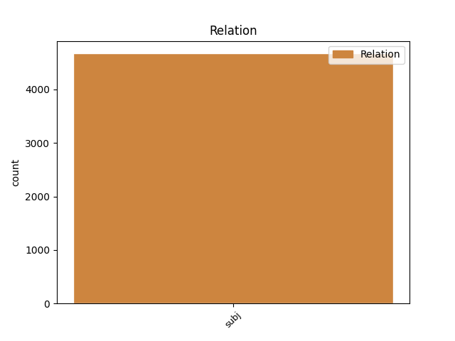
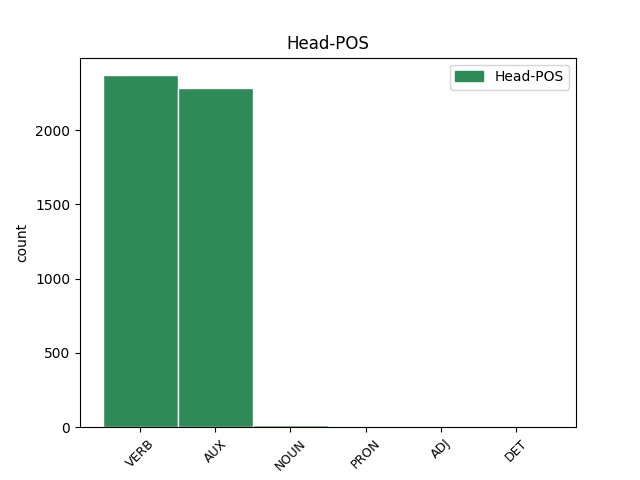
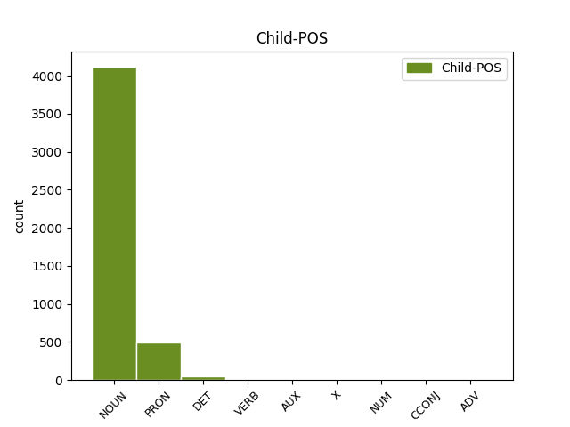

Distribution of features within this leaf



Agreement Rules sorted by frequency.
- When the dependent token is the subject(subj) of the head token, and the dependent token is NOUN.
1 Questo _ _ _ _ 0 _ _ _
2 Premio _ _ _ _ 0 _ _ _
3 che _ _ _ _ 0 _ _ _
4 non _ _ _ _ 0 _ _ _
5 avrà _ _ _ _ 0 _ _ _
6 sede _ _ _ _ 0 _ _ _
7 fissa _ _ _ _ 0 _ _ _
8 né _ _ _ _ 0 _ _ _
9 statuto _ _ _ _ 0 _ _ _
10 né _ _ _ _ 0 _ _ _
11 bando _ _ _ _ 0 _ _ _
12 di _ _ _ _ 0 _ _ _
13 concorso _ _ _ _ 0 _ _ _
14 sarà _ _ _ _ 0 _ _ _
15 dotato _ _ _ _ 0 _ _ _
16 di _ _ _ _ 0 _ _ _
17 una _ _ _ _ 0 _ _ _
18 somma _ _ _ _ 0 _ _ _
19 di _ _ _ _ 0 _ _ _
20 denaro _ _ _ _ 0 _ _ _
21 con _ _ _ _ 0 _ _ _
22 la _ _ _ _ 0 _ _ _
23 quale _ _ _ _ 0 _ _ _
24 un _ _ _ _ 0 _ _ _
25 gruppo gruppo NOUN S Gender=Masc|Number=Sing 28 subj _ _
26 di _ _ _ _ 0 _ _ _
27 amici _ _ _ _ 0 _ _ _
28 accoglierà accogliere VERB V Mood=Ind|Number=Sing|Person=3|Tense=Fut|VerbForm=Fin 0 _ _ _
29 un' _ _ _ _ 0 _ _ _
30 opera _ _ _ _ 0 _ _ _
31 o _ _ _ _ 0 _ _ _
32 un _ _ _ _ 0 _ _ _
33 gesto _ _ _ _ 0 _ _ _
34 o _ _ _ _ 0 _ _ _
35 un _ _ _ _ 0 _ _ _
36 evento _ _ _ _ 0 _ _ _
37 di _ _ _ _ 0 _ _ _
38 cultura _ _ _ _ 0 _ _ _
39 che _ _ _ _ 0 _ _ _
40 Elsa _ _ _ _ 0 _ _ _
41 Morante _ _ _ _ 0 _ _ _
42 avrebbe _ _ _ _ 0 _ _ _
43 apprezzato _ _ _ _ 0 _ _ _
44 . _ _ _ _ 0 _ _ _
1 La _ _ _ _ 0 _ _ _
2 prima _ _ _ _ 0 _ _ _
3 notizia _ _ _ _ 0 _ _ _
4 che _ _ _ _ 0 _ _ _
5 emerge _ _ _ _ 0 _ _ _
6 da _ _ _ _ 0 _ _ _
7 i _ _ _ _ 0 _ _ _
8 tabulati _ _ _ _ 0 _ _ _
9 forniti _ _ _ _ 0 _ _ _
10 da _ _ _ _ 0 _ _ _
11 la _ _ _ _ 0 _ _ _
12 Telecom _ _ _ _ 0 _ _ _
13 è _ _ _ _ 0 _ _ _
14 che _ _ _ _ 0 _ _ _
15 questi questo PRON PD Gender=Masc|Number=Plur|PronType=Dem 16 subj _ _
16 coincidono coincidere VERB V Mood=Ind|Number=Plur|Person=3|Tense=Pres|VerbForm=Fin 0 _ _ _
17 con _ _ _ _ 0 _ _ _
18 quelli _ _ _ _ 0 _ _ _
19 di _ _ _ _ 0 _ _ _
20 Craxi _ _ _ _ 0 _ _ _
21 : _ _ _ _ 0 _ _ _
22 e _ _ _ _ 0 _ _ _
23 questa _ _ _ _ 0 _ _ _
24 scoperta _ _ _ _ 0 _ _ _
25 rilancia _ _ _ _ 0 _ _ _
26 gli _ _ _ _ 0 _ _ _
27 interrogativi _ _ _ _ 0 _ _ _
28 su _ _ _ _ 0 _ _ _
29 il _ _ _ _ 0 _ _ _
30 modo _ _ _ _ 0 _ _ _
31 in _ _ _ _ 0 _ _ _
32 cui _ _ _ _ 0 _ _ _
33 l' _ _ _ _ 0 _ _ _
34 ex _ _ _ _ 0 _ _ _
35 presidente _ _ _ _ 0 _ _ _
36 di _ _ _ _ 0 _ _ _
37 il _ _ _ _ 0 _ _ _
38 consiglio _ _ _ _ 0 _ _ _
39 sia _ _ _ _ 0 _ _ _
40 riuscito _ _ _ _ 0 _ _ _
41 a _ _ _ _ 0 _ _ _
42 venire _ _ _ _ 0 _ _ _
43 in _ _ _ _ 0 _ _ _
44 possesso _ _ _ _ 0 _ _ _
45 di _ _ _ _ 0 _ _ _
46 atti _ _ _ _ 0 _ _ _
47 coperti _ _ _ _ 0 _ _ _
48 da _ _ _ _ 0 _ _ _
49 segreto _ _ _ _ 0 _ _ _
50 . _ _ _ _ 0 _ _ _
1 Ricostruzione _ _ _ _ 0 _ _ _
2 di _ _ _ _ 0 _ _ _
3 la _ _ _ _ 0 _ _ _
4 Berlino _ _ _ _ 0 _ _ _
5 di _ _ _ _ 0 _ _ _
6 il _ _ _ _ 0 _ _ _
7 futuro _ _ _ _ 0 _ _ _
8 , _ _ _ _ 0 _ _ _
9 Alexanderplatz _ _ _ _ 0 _ _ _
10 Bonn _ _ _ _ 0 _ _ _
11 - _ _ _ _ 0 _ _ _
12 molti _ _ _ _ 0 _ _ _
13 la _ _ _ _ 0 _ _ _
14 conoscono _ _ _ _ 0 _ _ _
15 , _ _ _ _ 0 _ _ _
16 ma _ _ _ _ 0 _ _ _
17 pochi poco DET DI Gender=Masc|Number=Plur|PronType=Ind 19 subj _ _
18 la _ _ _ _ 0 _ _ _
19 riconosceranno riconoscere VERB V Mood=Ind|Number=Plur|Person=3|Tense=Fut|VerbForm=Fin 0 _ _ _
20 in _ _ _ _ 0 _ _ _
21 la _ _ _ _ 0 _ _ _
22 grande _ _ _ _ 0 _ _ _
23 illustrazione _ _ _ _ 0 _ _ _
24 che _ _ _ _ 0 _ _ _
25 pubblichiamo _ _ _ _ 0 _ _ _
26 , _ _ _ _ 0 _ _ _
27 tratta _ _ _ _ 0 _ _ _
28 da _ _ _ _ 0 _ _ _
29 il _ _ _ _ 0 _ _ _
30 numero _ _ _ _ 0 _ _ _
31 speciale _ _ _ _ 0 _ _ _
32 consacrato _ _ _ _ 0 _ _ _
33 da _ _ _ _ 0 _ _ _
34 Stern _ _ _ _ 0 _ _ _
35 a _ _ _ _ 0 _ _ _
36 la _ _ _ _ 0 _ _ _
37 Berlino _ _ _ _ 0 _ _ _
38 di _ _ _ _ 0 _ _ _
39 il _ _ _ _ 0 _ _ _
40 futuro _ _ _ _ 0 _ _ _
41 . _ _ _ _ 0 _ _ _
1 Tira tirare VERB V Mood=Ind|Number=Sing|Person=3|Tense=Pres|VerbForm=Fin 11 subj _ _
2 forte _ _ _ _ 0 _ _ _
3 , _ _ _ _ 0 _ _ _
4 anche _ _ _ _ 0 _ _ _
5 con _ _ _ _ 0 _ _ _
6 Jalabert _ _ _ _ 0 _ _ _
7 in _ _ _ _ 0 _ _ _
8 fuga _ _ _ _ 0 _ _ _
9 , _ _ _ _ 0 _ _ _
10 la _ _ _ _ 0 _ _ _
11 squadra squadra NOUN S Gender=Fem|Number=Sing 0 _ _ _
12 di _ _ _ _ 0 _ _ _
13 i _ _ _ _ 0 _ _ _
14 ciechi _ _ _ _ 0 _ _ _
15 , _ _ _ _ 0 _ _ _
16 la _ _ _ _ 0 _ _ _
17 squadra _ _ _ _ 0 _ _ _
18 in _ _ _ _ 0 _ _ _
19 rosa _ _ _ _ 0 _ _ _
20 . _ _ _ _ 0 _ _ _
1 E _ _ _ _ 0 _ _ _
2 quale _ _ _ _ 0 _ _ _
3 fonderia fonderia NOUN S Gender=Fem|Number=Sing 0 _ _ _
4 può potere AUX VM Mood=Ind|Number=Sing|Person=3|Tense=Pres|VerbForm=Fin 3 subj _ _
5 aver _ _ _ _ 0 _ _ _
6 la _ _ _ _ 0 _ _ _
7 fatta _ _ _ _ 0 _ _ _
8 così _ _ _ _ 0 _ _ _
9 bella _ _ _ _ 0 _ _ _
10 , _ _ _ _ 0 _ _ _
11 con _ _ _ _ 0 _ _ _
12 quel _ _ _ _ 0 _ _ _
13 sorriso _ _ _ _ 0 _ _ _
14 ? _ _ _ _ 0 _ _ _
1 Uno _ _ _ _ 0 _ _ _
2 stato _ _ _ _ 0 _ _ _
3 in _ _ _ _ 0 _ _ _
4 il _ _ _ _ 0 _ _ _
5 quale _ _ _ _ 0 _ _ _
6 le _ _ _ _ 0 _ _ _
7 idee _ _ _ _ 0 _ _ _
8 di _ _ _ _ 0 _ _ _
9 i _ _ _ _ 0 _ _ _
10 politici _ _ _ _ 0 _ _ _
11 cessino _ _ _ _ 0 _ _ _
12 di _ _ _ _ 0 _ _ _
13 tentare _ _ _ _ 0 _ _ _
14 di _ _ _ _ 0 _ _ _
15 prevaricare _ _ _ _ 0 _ _ _
16 la _ _ _ _ 0 _ _ _
17 realtà _ _ _ _ 0 _ _ _
18 , _ _ _ _ 0 _ _ _
19 come _ _ _ _ 0 _ _ _
20 essa esso CCONJ CC Gender=Fem|Number=Sing 21 subj _ _
21 appare apparire VERB V Mood=Ind|Number=Sing|Person=3|Tense=Pres|VerbForm=Fin 0 _ _ _
22 , _ _ _ _ 0 _ _ _
23 osservando _ _ _ _ 0 _ _ _
24 da _ _ _ _ 0 _ _ _
25 vicino _ _ _ _ 0 _ _ _
26 la _ _ _ _ 0 _ _ _
27 nostra _ _ _ _ 0 _ _ _
28 società _ _ _ _ 0 _ _ _
29 di _ _ _ _ 0 _ _ _
30 oggi _ _ _ _ 0 _ _ _
31 e _ _ _ _ 0 _ _ _
32 i _ _ _ _ 0 _ _ _
33 Paesi _ _ _ _ 0 _ _ _
34 che _ _ _ _ 0 _ _ _
35 hanno _ _ _ _ 0 _ _ _
36 il _ _ _ _ 0 _ _ _
37 nostro _ _ _ _ 0 _ _ _
38 stesso _ _ _ _ 0 _ _ _
39 livello _ _ _ _ 0 _ _ _
40 di _ _ _ _ 0 _ _ _
41 sviluppo _ _ _ _ 0 _ _ _
42 economico _ _ _ _ 0 _ _ _
43 . _ _ _ _ 0 _ _ _
1 C' _ _ _ _ 0 _ _ _
2 è essere VERB V Mood=Ind|Number=Sing|Person=3|Tense=Pres|VerbForm=Fin 0 _ _ _
3 quindi _ _ _ _ 0 _ _ _
4 molto molto ADV B Gender=Masc|Number=Sing 2 subj _ _
5 da _ _ _ _ 0 _ _ _
6 fare _ _ _ _ 0 _ _ _
7 anche _ _ _ _ 0 _ _ _
8 per _ _ _ _ 0 _ _ _
9 mettere _ _ _ _ 0 _ _ _
10 in _ _ _ _ 0 _ _ _
11 grado _ _ _ _ 0 _ _ _
12 tutti _ _ _ _ 0 _ _ _
13 i _ _ _ _ 0 _ _ _
14 cittadini _ _ _ _ 0 _ _ _
15 di _ _ _ _ 0 _ _ _
16 utilizzare _ _ _ _ 0 _ _ _
17 , _ _ _ _ 0 _ _ _
18 senza _ _ _ _ 0 _ _ _
19 distinzioni _ _ _ _ 0 _ _ _
20 , _ _ _ _ 0 _ _ _
21 le _ _ _ _ 0 _ _ _
22 risorse _ _ _ _ 0 _ _ _
23 di _ _ _ _ 0 _ _ _
24 l' _ _ _ _ 0 _ _ _
25 informatica _ _ _ _ 0 _ _ _
26 . _ _ _ _ 0 _ _ _
1 L' _ _ _ _ 0 _ _ _
2 open open X SW Foreign=Yes|Gender=Masc|Number=Sing 5 subj _ _
3 space _ _ _ _ 0 _ _ _
4 originale _ _ _ _ 0 _ _ _
5 era essere AUX VA Mood=Ind|Number=Sing|Person=3|Tense=Imp|VerbForm=Fin 0 _ _ _
6 un _ _ _ _ 0 _ _ _
7 pò _ _ _ _ 0 _ _ _
8 meglio _ _ _ _ 0 _ _ _
9 : _ _ _ _ 0 _ _ _
1 Se _ _ _ _ 0 _ _ _
2 a _ _ _ _ 0 _ _ _
3 il _ _ _ _ 0 _ _ _
4 Sud _ _ _ _ 0 _ _ _
5 milioni milione NUM N Gender=Masc|Number=Plur|NumType=Card 9 subj _ _
6 di _ _ _ _ 0 _ _ _
7 persone _ _ _ _ 0 _ _ _
8 lo _ _ _ _ 0 _ _ _
9 cercano cercare VERB V Mood=Ind|Number=Plur|Person=3|Tense=Pres|VerbForm=Fin 0 _ _ _
10 senza _ _ _ _ 0 _ _ _
11 trovar _ _ _ _ 0 _ _ _
12 lo _ _ _ _ 0 _ _ _
13 , _ _ _ _ 0 _ _ _
14 qui _ _ _ _ 0 _ _ _
15 sono _ _ _ _ 0 _ _ _
16 gli _ _ _ _ 0 _ _ _
17 imprenditori _ _ _ _ 0 _ _ _
18 ad _ _ _ _ 0 _ _ _
19 offrir _ _ _ _ 0 _ _ _
20 lo _ _ _ _ 0 _ _ _
21 senza _ _ _ _ 0 _ _ _
22 riuscir _ _ _ _ 0 _ _ _
23 ci _ _ _ _ 0 _ _ _
24 . _ _ _ _ 0 _ _ _
Disagree Examples:
1 Il _ _ _ _ 0 _ _ _
2 raggiungimento raggiungimento NOUN S Gender=Masc|Number=Sing 9 subj _ _
3 e _ _ _ _ 0 _ _ _
4 il _ _ _ _ 0 _ _ _
5 mantenimento _ _ _ _ 0 _ _ _
6 di _ _ _ _ 0 _ _ _
7 posizioni _ _ _ _ 0 _ _ _
8 competitive _ _ _ _ 0 _ _ _
9 sono essere AUX VA Mood=Ind|Number=Plur|Person=3|Tense=Pres|VerbForm=Fin 0 _ _ _
10 sempre _ _ _ _ 0 _ _ _
11 più _ _ _ _ 0 _ _ _
12 il _ _ _ _ 0 _ _ _
13 risultato _ _ _ _ 0 _ _ _
14 di _ _ _ _ 0 _ _ _
15 la _ _ _ _ 0 _ _ _
16 interazione _ _ _ _ 0 _ _ _
17 tra _ _ _ _ 0 _ _ _
18 le _ _ _ _ 0 _ _ _
19 azioni _ _ _ _ 0 _ _ _
20 di _ _ _ _ 0 _ _ _
21 i _ _ _ _ 0 _ _ _
22 singoli _ _ _ _ 0 _ _ _
23 soggetti _ _ _ _ 0 _ _ _
24 ( _ _ _ _ 0 _ _ _
25 non _ _ _ _ 0 _ _ _
26 solo _ _ _ _ 0 _ _ _
27 economici _ _ _ _ 0 _ _ _
28 ) _ _ _ _ 0 _ _ _
29 e _ _ _ _ 0 _ _ _
30 la _ _ _ _ 0 _ _ _
31 disponibilità _ _ _ _ 0 _ _ _
32 di _ _ _ _ 0 _ _ _
33 risorse _ _ _ _ 0 _ _ _
34 presenti _ _ _ _ 0 _ _ _
35 in _ _ _ _ 0 _ _ _
36 il _ _ _ _ 0 _ _ _
37 contesto _ _ _ _ 0 _ _ _
38 socio _ _ _ _ 0 _ _ _
39 economico _ _ _ _ 0 _ _ _
40 di _ _ _ _ 0 _ _ _
41 riferimento _ _ _ _ 0 _ _ _
42 . _ _ _ _ 0 _ _ _
1 Quest' questo PRON PD Gender=Masc|Number=Plur|PronType=Dem 3 subj _ SpaceAfter=No
2 ultimo _ _ _ _ 0 _ _ _
3 è essere AUX VA Mood=Ind|Number=Sing|Person=3|Tense=Pres|VerbForm=Fin 0 _ _ _
4 funzione _ _ _ _ 0 _ _ _
5 di _ _ _ _ 0 _ _ _
6 variabili _ _ _ _ 0 _ _ _
7 strutturali _ _ _ _ 0 _ _ _
8 tra _ _ _ _ 0 _ _ _
9 cui _ _ _ _ 0 _ _ _
10 le _ _ _ _ 0 _ _ _
11 istituzioni _ _ _ _ 0 _ _ _
12 , _ _ _ _ 0 _ _ _
13 i _ _ _ _ 0 _ _ _
14 settori _ _ _ _ 0 _ _ _
15 produttivi _ _ _ _ 0 _ _ _
16 , _ _ _ _ 0 _ _ _
17 il _ _ _ _ 0 _ _ _
18 mix _ _ _ _ 0 _ _ _
19 pubblico _ _ _ _ 0 _ _ _
20 privato _ _ _ _ 0 _ _ _
21 , _ _ _ _ 0 _ _ _
22 le _ _ _ _ 0 _ _ _
23 risorse _ _ _ _ 0 _ _ _
24 umane _ _ _ _ 0 _ _ _
25 e _ _ _ _ 0 _ _ _
26 naturali _ _ _ _ 0 _ _ _
27 , _ _ _ _ 0 _ _ _
28 le _ _ _ _ 0 _ _ _
29 infrastrutture _ _ _ _ 0 _ _ _
30 , _ _ _ _ 0 _ _ _
31 le _ _ _ _ 0 _ _ _
32 radici _ _ _ _ 0 _ _ _
33 culturali _ _ _ _ 0 _ _ _
34 che _ _ _ _ 0 _ _ _
35 si _ _ _ _ 0 _ _ _
36 modificano _ _ _ _ 0 _ _ _
37 in _ _ _ _ 0 _ _ _
38 genere _ _ _ _ 0 _ _ _
39 attraverso _ _ _ _ 0 _ _ _
40 processi _ _ _ _ 0 _ _ _
41 di _ _ _ _ 0 _ _ _
42 lungo _ _ _ _ 0 _ _ _
43 periodo _ _ _ _ 0 _ _ _
44 , _ _ _ _ 0 _ _ _
45 ma _ _ _ _ 0 _ _ _
46 che _ _ _ _ 0 _ _ _
47 recentemente _ _ _ _ 0 _ _ _
48 hanno _ _ _ _ 0 _ _ _
49 mostrato _ _ _ _ 0 _ _ _
50 una _ _ _ _ 0 _ _ _
51 forte _ _ _ _ 0 _ _ _
52 accelerazione _ _ _ _ 0 _ _ _
53 , _ _ _ _ 0 _ _ _
54 incalzati _ _ _ _ 0 _ _ _
55 da _ _ _ _ 0 _ _ _
56 eventi _ _ _ _ 0 _ _ _
57 imprevedibili _ _ _ _ 0 _ _ _
58 quali _ _ _ _ 0 _ _ _
59 la _ _ _ _ 0 _ _ _
60 fine _ _ _ _ 0 _ _ _
61 di _ _ _ _ 0 _ _ _
62 la _ _ _ _ 0 _ _ _
63 guerra _ _ _ _ 0 _ _ _
64 fredda _ _ _ _ 0 _ _ _
65 , _ _ _ _ 0 _ _ _
66 a _ _ _ _ 0 _ _ _
67 livello _ _ _ _ 0 _ _ _
68 mondiale _ _ _ _ 0 _ _ _
69 , _ _ _ _ 0 _ _ _
70 e _ _ _ _ 0 _ _ _
71 l' _ _ _ _ 0 _ _ _
72 avviato _ _ _ _ 0 _ _ _
73 processo _ _ _ _ 0 _ _ _
74 di _ _ _ _ 0 _ _ _
75 trasformazione _ _ _ _ 0 _ _ _
76 di _ _ _ _ 0 _ _ _
77 le _ _ _ _ 0 _ _ _
78 istituzioni _ _ _ _ 0 _ _ _
79 , _ _ _ _ 0 _ _ _
80 in _ _ _ _ 0 _ _ _
81 Italia _ _ _ _ 0 _ _ _
82 . _ _ _ _ 0 _ _ _
1 Una _ _ _ _ 0 _ _ _
2 buona _ _ _ _ 0 _ _ _
3 rete rete NOUN S Gender=Fem|Number=Sing 25 subj _ _
4 di _ _ _ _ 0 _ _ _
5 infrastrutture _ _ _ _ 0 _ _ _
6 connettive _ _ _ _ 0 _ _ _
7 interne _ _ _ _ 0 _ _ _
8 e _ _ _ _ 0 _ _ _
9 l' _ _ _ _ 0 _ _ _
10 efficienza _ _ _ _ 0 _ _ _
11 di _ _ _ _ 0 _ _ _
12 i _ _ _ _ 0 _ _ _
13 servizi _ _ _ _ 0 _ _ _
14 di _ _ _ _ 0 _ _ _
15 comunicazione _ _ _ _ 0 _ _ _
16 e _ _ _ _ 0 _ _ _
17 di _ _ _ _ 0 _ _ _
18 trasporto _ _ _ _ 0 _ _ _
19 che _ _ _ _ 0 _ _ _
20 su _ _ _ _ 0 _ _ _
21 queste _ _ _ _ 0 _ _ _
22 reti _ _ _ _ 0 _ _ _
23 si _ _ _ _ 0 _ _ _
24 svolgono _ _ _ _ 0 _ _ _
25 assicurano assicurare VERB V Mood=Ind|Number=Plur|Person=3|Tense=Pres|VerbForm=Fin 0 _ _ _
26 , _ _ _ _ 0 _ _ _
27 infatti _ _ _ _ 0 _ _ _
28 , _ _ _ _ 0 _ _ _
29 una _ _ _ _ 0 _ _ _
30 migliore _ _ _ _ 0 _ _ _
31 organizzazione _ _ _ _ 0 _ _ _
32 di _ _ _ _ 0 _ _ _
33 le _ _ _ _ 0 _ _ _
34 funzioni _ _ _ _ 0 _ _ _
35 su _ _ _ _ 0 _ _ _
36 il _ _ _ _ 0 _ _ _
37 territorio _ _ _ _ 0 _ _ _
38 e _ _ _ _ 0 _ _ _
39 una _ _ _ _ 0 _ _ _
40 più _ _ _ _ 0 _ _ _
41 efficiente _ _ _ _ 0 _ _ _
42 divisione _ _ _ _ 0 _ _ _
43 spaziale _ _ _ _ 0 _ _ _
44 di _ _ _ _ 0 _ _ _
45 il _ _ _ _ 0 _ _ _
46 lavoro _ _ _ _ 0 _ _ _
47 fra _ _ _ _ 0 _ _ _
48 centri _ _ _ _ 0 _ _ _
49 urbani _ _ _ _ 0 _ _ _
50 ; _ _ _ _ 0 _ _ _
51 l' _ _ _ _ 0 _ _ _
52 efficienza _ _ _ _ 0 _ _ _
53 di _ _ _ _ 0 _ _ _
54 le _ _ _ _ 0 _ _ _
55 interconnessioni _ _ _ _ 0 _ _ _
56 a _ _ _ _ 0 _ _ _
57 rete _ _ _ _ 0 _ _ _
58 con _ _ _ _ 0 _ _ _
59 l' _ _ _ _ 0 _ _ _
60 esterno _ _ _ _ 0 _ _ _
61 , _ _ _ _ 0 _ _ _
62 sia _ _ _ _ 0 _ _ _
63 in _ _ _ _ 0 _ _ _
64 il _ _ _ _ 0 _ _ _
65 senso _ _ _ _ 0 _ _ _
66 strettamente _ _ _ _ 0 _ _ _
67 fisico _ _ _ _ 0 _ _ _
68 di _ _ _ _ 0 _ _ _
69 le _ _ _ _ 0 _ _ _
70 reti _ _ _ _ 0 _ _ _
71 infrastrutturali _ _ _ _ 0 _ _ _
72 di _ _ _ _ 0 _ _ _
73 viabilità _ _ _ _ 0 _ _ _
74 e _ _ _ _ 0 _ _ _
75 trasporto _ _ _ _ 0 _ _ _
76 sia _ _ _ _ 0 _ _ _
77 in _ _ _ _ 0 _ _ _
78 l' _ _ _ _ 0 _ _ _
79 aspetto _ _ _ _ 0 _ _ _
80 economico _ _ _ _ 0 _ _ _
81 , _ _ _ _ 0 _ _ _
82 contribuendo _ _ _ _ 0 _ _ _
83 a _ _ _ _ 0 _ _ _
84 creare _ _ _ _ 0 _ _ _
85 una _ _ _ _ 0 _ _ _
86 rete _ _ _ _ 0 _ _ _
87 urbana _ _ _ _ 0 _ _ _
88 di _ _ _ _ 0 _ _ _
89 complementarietà _ _ _ _ 0 _ _ _
90 costituita _ _ _ _ 0 _ _ _
91 da _ _ _ _ 0 _ _ _
92 più _ _ _ _ 0 _ _ _
93 centri _ _ _ _ 0 _ _ _
94 che _ _ _ _ 0 _ _ _
95 possono _ _ _ _ 0 _ _ _
96 usufruire _ _ _ _ 0 _ _ _
97 di _ _ _ _ 0 _ _ _
98 strutture _ _ _ _ 0 _ _ _
99 e _ _ _ _ 0 _ _ _
100 servizi _ _ _ _ 0 _ _ _
101 ( _ _ _ _ 0 _ _ _
102 fiere _ _ _ _ 0 _ _ _
103 specializzate _ _ _ _ 0 _ _ _
104 , _ _ _ _ 0 _ _ _
105 unità _ _ _ _ 0 _ _ _
106 di _ _ _ _ 0 _ _ _
107 ricerca _ _ _ _ 0 _ _ _
108 , _ _ _ _ 0 _ _ _
109 università _ _ _ _ 0 _ _ _
110 , _ _ _ _ 0 _ _ _
111 centri _ _ _ _ 0 _ _ _
112 di _ _ _ _ 0 _ _ _
113 formazione _ _ _ _ 0 _ _ _
114 ecc _ _ _ _ 0 _ _ _
115 ) _ _ _ _ 0 _ _ _
116 non _ _ _ _ 0 _ _ _
117 compatibili _ _ _ _ 0 _ _ _
118 con _ _ _ _ 0 _ _ _
119 la _ _ _ _ 0 _ _ _
120 loro _ _ _ _ 0 _ _ _
121 limitata _ _ _ _ 0 _ _ _
122 dimensione _ _ _ _ 0 _ _ _
123 assoluta _ _ _ _ 0 _ _ _
124 . _ _ _ _ 0 _ _ _
1 Da _ _ _ _ 0 _ _ _
2 qui _ _ _ _ 0 _ _ _
3 l' _ _ _ _ 0 _ _ _
4 inserimento _ _ _ _ 0 _ _ _
5 di _ _ _ _ 0 _ _ _
6 le _ _ _ _ 0 _ _ _
7 infrastrutture _ _ _ _ 0 _ _ _
8 tra _ _ _ _ 0 _ _ _
9 i _ _ _ _ 0 _ _ _
10 fattori _ _ _ _ 0 _ _ _
11 di _ _ _ _ 0 _ _ _
12 localizzazione _ _ _ _ 0 _ _ _
13 per _ _ _ _ 0 _ _ _
14 le _ _ _ _ 0 _ _ _
15 imprese _ _ _ _ 0 _ _ _
16 nazionali _ _ _ _ 0 _ _ _
17 ed _ _ _ _ 0 _ _ _
18 estere _ _ _ _ 0 _ _ _
19 attorno _ _ _ _ 0 _ _ _
20 a _ _ _ _ 0 _ _ _
21 i _ _ _ _ 0 _ _ _
22 quali _ _ _ _ 0 _ _ _
23 si _ _ _ _ 0 _ _ _
24 sono essere AUX VA Mood=Ind|Number=Sing|Person=1|Tense=Pres|VerbForm=Fin 0 _ _ _
25 articolate _ _ _ _ 0 _ _ _
26 varie _ _ _ _ 0 _ _ _
27 classifiche classifica NOUN S Gender=Fem|Number=Plur 24 subj _ _
28 comparative _ _ _ _ 0 _ _ _
29 su _ _ _ _ 0 _ _ _
30 la _ _ _ _ 0 _ _ _
31 capacità _ _ _ _ 0 _ _ _
32 di _ _ _ _ 0 _ _ _
33 attrazione _ _ _ _ 0 _ _ _
34 di _ _ _ _ 0 _ _ _
35 diverse _ _ _ _ 0 _ _ _
36 città _ _ _ _ 0 _ _ _
37 in _ _ _ _ 0 _ _ _
38 grado _ _ _ _ 0 _ _ _
39 di _ _ _ _ 0 _ _ _
40 offrire _ _ _ _ 0 _ _ _
41 livelli _ _ _ _ 0 _ _ _
42 differenti _ _ _ _ 0 _ _ _
43 di _ _ _ _ 0 _ _ _
44 economie _ _ _ _ 0 _ _ _
45 esterne _ _ _ _ 0 _ _ _
46 . _ _ _ _ 0 _ _ _
1 Le _ _ _ _ 0 _ _ _
2 trattative trattativa NOUN S Gender=Fem|Number=Plur 9 subj _ SpaceAfter=No
3 , _ _ _ _ 0 _ _ _
4 in _ _ _ _ 0 _ _ _
5 corso _ _ _ _ 0 _ _ _
6 da _ _ _ _ 0 _ _ _
7 tempo _ _ _ _ 0 _ _ _
8 , _ _ _ _ 0 _ _ _
9 sono essere AUX VA Mood=Ind|Number=Sing|Person=1|Tense=Pres|VerbForm=Fin 0 _ _ _
10 ormai _ _ _ _ 0 _ _ _
11 terminate _ _ _ _ 0 _ _ _
12 e _ _ _ _ 0 _ _ _
13 si _ _ _ _ 0 _ _ _
14 aspetta _ _ _ _ 0 _ _ _
15 solo _ _ _ _ 0 _ _ _
16 la _ _ _ _ 0 _ _ _
17 richiesta _ _ _ _ 0 _ _ _
18 formale _ _ _ _ 0 _ _ _
19 di _ _ _ _ 0 _ _ _
20 l' _ _ _ _ 0 _ _ _
21 Intersind _ _ _ _ 0 _ _ _
22 che _ _ _ _ 0 _ _ _
23 , _ _ _ _ 0 _ _ _
24 appunto _ _ _ _ 0 _ _ _
25 , _ _ _ _ 0 _ _ _
26 potrebbe _ _ _ _ 0 _ _ _
27 arrivare _ _ _ _ 0 _ _ _
28 anche _ _ _ _ 0 _ _ _
29 in _ _ _ _ 0 _ _ _
30 queste _ _ _ _ 0 _ _ _
31 ore _ _ _ _ 0 _ _ _
32 . _ _ _ _ 0 _ _ _